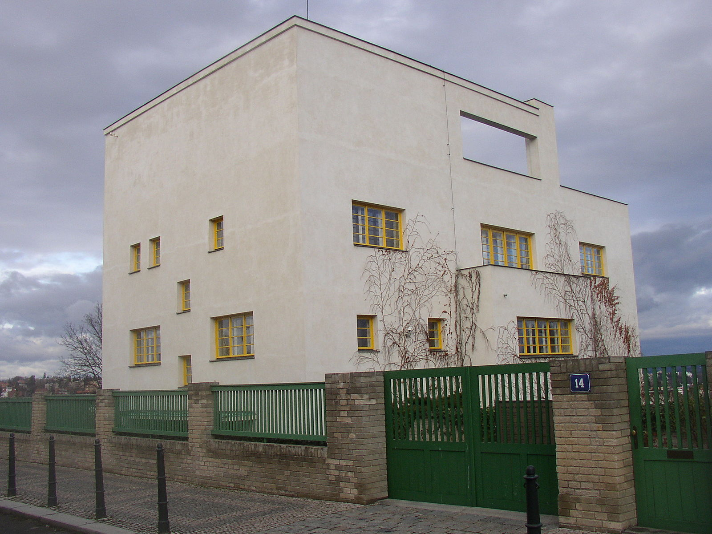

FORM FOLLOWS WHAT?
‘Form follows function’ is probably the most famous and defining principle of the graphic design through the years of the profession existence and the minds of many design practitioners. It came from modernist architecture meaning that the shape of a building should essentially relate to its intended purpose. As modernists were also pioneers of graphic design, they saw practical reason in focusing mainly on functionality when choosing the right form for what they were working on. Indeed, in the atmosphere where the graphic design was born, functionality was a truly important element as it finally divided design from art into a separate profession. But its development during the century revealed some other essential factors to focus on.
FORM EVER FOLLOWS FUNCTION
The author of this famous principle, which became a modernist’s credo during the 20th century, was an American architect Louis Sullivan. In 1896, he used that expression in an article titled The Tall Office Building Artistically Considered. His precise phrase was ‘form ever follows function’, but the simpler version of it is more widely remembered. According to Sullivan, this was the single ‘rule that shall permit of no exception’. In general, he developed the form of the steel skyscraper in Chicago at the time when technological and economic forces lead to the unavoidable split with existing methods and forms. The purpose of the building had to determine the new form of it instead of the pattern chosen out of the traditional pattern book. Therefore, ‘form follows function’, in contrast to ‘form follows precedent’ (Sullivan, 1896).
However, Sullivan himself did not always follow his own directives – certainly not to the same extent as the modernists, who took what he said for dogma (Sagmeister & Walsh, 2018). At first glance, Sullivan's buildings seem pure and solid in their main masses, but he often decorated their plain facades with bursts of lush ornaments, varying from natural forms to more geometric designs. One of the most obvious examples is the entrance of the Carson, Pirie, Scott and Company Building in Chicago, richly covered with the twisting green ironwork (fig. 1). In other words, it is lavishly decorated with completely non-functional elements. Therefore, Sullivan's credo was brought to life by modernists more than by himself.

FORM FOLLOWS PROGRESS
Probably, the most functionalist out of all modernists was the Austrian architect Adolf Loos, who worked in the United States at the beginning of his career and admired the functionality of American architecture and the work of Sullivan in particular. In 1908 he wrote an essay titled ‘Ornament and Crime’ in response to the detailed ornament used by the architects of the Vienna Secession movement (Sagmeister & Walsh, 2018). According to him, ‘ornamentation’ was also equal to any further improvement of a form right after the initial function is achieved. He detested the aesthetic appropriation that many 19th-century practitioners chose as their strategy. Loos believed that new times require new means of expression. The machine age has begun, so to use in any kind of design the elements of past eras - is nothing more than a farce or a parody. He also explored the idea that the intellectual power and the progress of culture are associated with the deletion of any ornament from everyday objects, and that it was, therefore, a crime to force craftsmen or builders to waste their time on ornamentation (Loos, 2019).
Thus, future modernists adopted Sullivan's phrase as well as Loos's moralistic argument and continued with the belief that when a function is optimized, the form following it automatically becomes perfect. But what is surprising, when in the 20th century the functionality and economy guided the architects and designers in their works, this did not prevent the contrariety between the goal and the result. Many projects created at this time occurred unsuccessful with time. Cheap and same housing, boring cards with safety rules for planes - only a few people wanted to live in these ‘functional’ houses and look at these cards (Sagmeister & Walsh, 2018).
FORM FOLLOWS INDIVIDUALITY
Unlike Loos's notion of form, which remained constant through all of his architectural and written works, some modernists changed their minds later during their career. One of them was Jan Tschichold, a German typographer, book designer, and educator, who played an important role in the development of the graphic design during the 20th century – first, by improving and delivering postulates of modernist typography (fig. 3), and then admiring conservative typographic arrangements (fig. 4). But many design schools continue to teach from his ‘Die Neue Typographie’ (first published in 1928), even though Tschichold himself renounced almost everything he wrote in it. ‘What I do today is not in the line of my often-mentioned book, “Die Neue Typographie,” since I am the most severe critic of the young Tschichold of 1925–28. … So many things in that primer are erroneous, because my experience was too small’(Tschichold, 1964). He also insisted that Modernist typography 'is the exemplar of a most inflexible typography which makes no distinction between the advertising of an artistic performance or of a screw catalog. Nor does this typography allow for the human desire for variety. It has an entirely militaristic attitude'. Instead, he wrote that typographic design decisions should be treated individualy, 'as different as the people around us' (Tschichold, 1964).


FORM FOLLOWS EMOTION
Here is another interpretation of Sullivan’s classic maxim which also deals with diversity and individuality but in the form of human emotions. Hartmut Esslinger is founder of the global design and strategy company known as frog. His innovative approach to design refined ‘form follows function’ into Frog’s slogan of ‘form follows emotion’, pioneering a global design philosophy that sought a comprehensive approach to both the aesthetics and functionality of the design. ‘I always felt that “form follows function” was a simplistic and misunderstood reduction of Sullivan's wider description. I also believe that “function” is a must, however, humans always strived for a deeper meaning’ (Frog). Esslinger's significant work for well-known electronic brands such as Sony caught the eye of Steve Jobs who in 1981 was looking for the company to design a signature look for the new Macintosh line. In 1984 this successful collaboration resulted with the Apple IIc which took personal computers into a new age of visual user-friendliness and also became instant classics of design (fig. 5). Esslinger had a straightforward goal to achieve the right balance between software and hardware. 'With the aim to be the computer for the rest of us, the Macintosh was far easier to operate and more intuitive than the prevailing IBM desktop models; Frogdesign expressed that simplicity’ (Edwards, 1999). Therefore, not only an object is designed, but also a relationship with it.

Another person, exploring the importance of the emotional aspect in design is Don Norman, an American psychologist and usability consultant who is often recognised as the father of UX (this term first appeared in his book The Design of Everyday Things, which was first published in 1988). Like Esslinger, Norman is also known for a prominent work for Apple in the '90s, when he joined the company first as a “user experience architect” and then became the Vice President of Apple Computer’s Advanced Technology Group. Later in his book Emotional Design: Why We Love (Or Hate) Everyday Things (2004), Don Norman talks about form in design among other aspects and claims that ‘attractive things do work better—their attractiveness produces positive emotions, causing mental processes to be more creative, more tolerant of minor difficulties’ (Norman, 2004). He comes to this conclusion by exploring three levels of human cognitive processing which lead to three corresponding forms of design: visceral, behavioural, and reflective. Shortly, these three levels capture how we emotionally react to visual experiences and they also can be mapped accordingly to such product characteristics as appearance, the pleasure and effectiveness of use and self-image, personal satisfaction and memories (Norman, 2004).
FORM FOLLOWS PROCESS
Unlike all already mentioned approaches dealing with solid objects in design, this one is mainly about finding a suitable algorithm in order to define the form in the process. Neri Oxman, a designer and professor at the MIT Media Lab, is known for the combination of design, biology, computing, and materials engineering in her interdisciplinary works of all scales. Her approach is based on form-finding, not form-making, arguing that ‘if indeed form is to follow function, how is that function tested, evaluated, validated; according to whom and by which criteria?’ (PopTech, 2009). Oxman believes that the nature, being a great multifunctional material engineer, has all the answers we may need. She investigates the material and performance of nature and describes her working method as computationally enabled form-finding, which is about bringing together material properties and environmental constraints, mixing them together and then generating form out of them. In a more practical way, it is about looking at natural examples, transferring them into digital realms and then back into the physical with produced design outputs. Focusing a lot on sustainability, Oxman also has an idea that instead of separation between materials and functions we have today, there is a possibility to move forward to designing and engineering systems that could incorporate performance criteria. In other words, nature can teach us how to build a structure that can sustain itself. Even in such a large scale as architecture, instead of using steel for the structural performance of the building and glass to let the light through, she believes we can create a material that would change its characteristics where it's needed to fulfil all the desired functions (PopTech, 2009).

Other practitioners whose work is focused on processes rather than completed and defined forms are those of Moniker, an Amsterdam based interactive design studio by Luna Maurer & Roel Wouters. Within their multidisciplinary projects, they explore the social effects of media and technology on our data-driven society. In 2008 they formulated the Conditional Design Manifesto which contained their common views on art and design and reflected their approach to design and the way of working in general rather than chosen media. According to this approach, there are three main elements to work with: process, logic and input. The process is the result and it produces formations rather than forms. Logic is the main tool which is used to design the conditions through which the abovementioned process can take place. Rules they apply are used as constraints to sharpen the perspective on the process. Finally, the input is the main material which employs logic as well as stimulates and influences the whole process. This element comes from our complex environment. It could be nature, society and its human interactions. This kind of external collaboration within a regulated logic leads towards unpredictable forms of design, which display differences and illustrate the state of constant social changes (Walker Art Center, 2013).

CONCLUSION
Summing-up all the mentioned notions of form, interpretations of the original Sullivan's 'rule' and approaches to the design in general, the following conclusion derives quite obviously: design of any kind and scale definitely requires a function and should have a purpose, but in order to succeed its various forms have much more directions to follow.
BIBLIOGRAPHY
Edwards, O. (1999). Form follows emotion. [Online] Available at: https://www.forbes.com/asap/1999/1112/237.html [Accessed: 17th January 2020].
Frog (n.d.). Decades of Innovation. [Online] Available at: https://www.frogdesign.com/about [Accessed: 17th January 2020].
Loos, A. (2019). Ornament and Crime. [Online] London: Penguin. Available from: https://www.penguin.co.uk/books/193471/ornament-and-crime/9780141392981.html [Accessed: 17th January 2020].
Moniker (n.d.). About us. [Online] Available at: https://studiomoniker.com/about [Accessed: 17th January 2020].
Norman, D. (2002). The Design of Everyday Things. Reprint. New York, NY: Basic Books.
Norman, D. (2004). Emotional Design: Why We Love (or Hate) Everyday Things. New York, NY: Basic Books.
PopTech (2009). Neri Oxman: On Designing Form. [Online video]. Available at: https://vimeo.com/7806194 [Accessed: 17th January 2020].
Sagmeister, S. & Walsh, J. (2018). Sagmeister & Walsh: Beauty. London: Phaidon Press Limited.
Sullivan, l. (1896). The tall office building artistically considered. [Online] Available at: https://archive.org/details/tallofficebuildi00sull [Accessed: 17th January 2020].
Tschichold, J. (1995). The New Typography: A Handbook For Modern Designers. Berkeley, CA: University of California Press.
Tschichold, J. (1964). Quousque Tandem… [Online] Available at: https://tinyurl.com/tcddjcc [Accessed: 17th January 2020].
Walker Art Center (2013). Insights 2013: Luna Maurer, Moniker, Amsterdam. [Online video]. Available at: https://tinyurl.com/ulkx6u3 [Accessed: 17th January 2020].